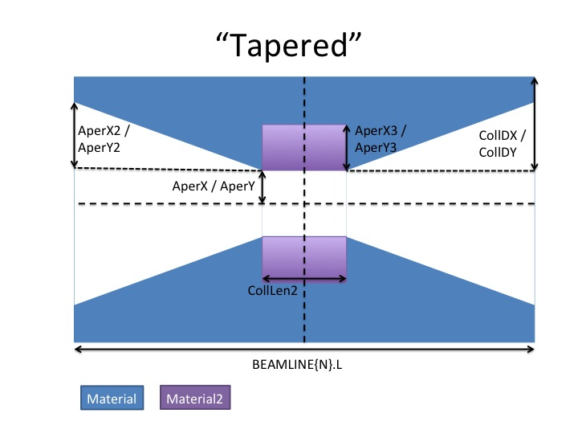
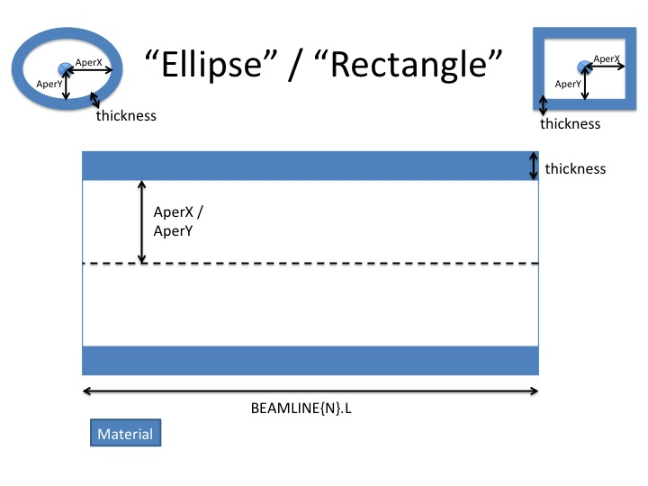
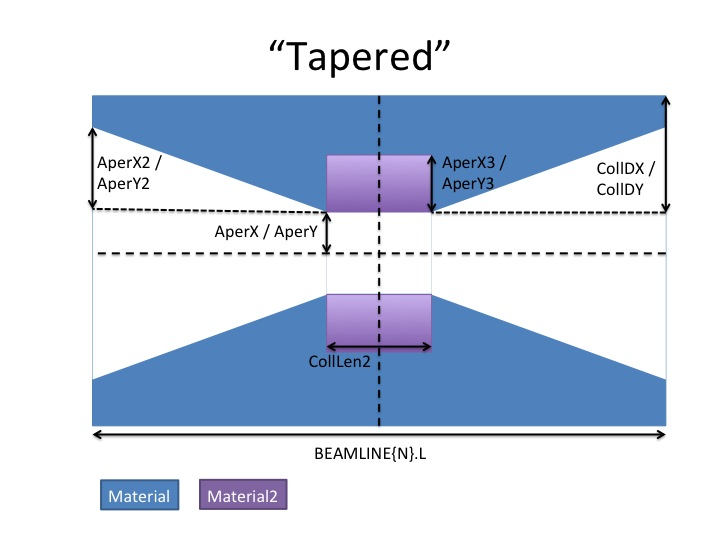

The
LUCRETIA Project
Interface Routines to Access External Processes
Interface routines between
Lucretia and other modeling software tools are handled
by the ExtProcess.m class and other class files in the
src/ExtProcess directory. These provide the tools to
link the Lucretia data structures and underlying
tracking engine to other modeling software, and also
handle returning processed data back into the Lucretia
Matlab environment. The ExtProcess library of classes
perform this function by modifying and extending the
functionality of the standard Lucretia data structures.
The external codes which Lucretia currently supports are
listed below:
ExtProcess ExtGeometry ExtPrimaryParticles ExtSecondaryParticles ExtEMField
Additional details for geometry types available below.
Properties (Set Access protected: use Set*
methods to change)

NB: AperX2/AperY2/AperX3/AperY3 are supplied as a fraction of CollDX or CollDY. CollLen2 is supplied as a fraction of BEAMLINE{N}.L (the beamline element length field). Setting AperX2 etc to 0 reduces the geometry to that of 'Rectangle' but with adjustable X and Y thicknesses. Setting CollLen2=0 allows for having just a simple tapered geometry with single material type. Also both materials can be defined to be of the same type if required.
whitegr
13-June-2014
ExtProcess ExtGeometry ExtPrimaryParticles ExtSecondaryParticles ExtEMField
Additional details for geometry types available below.
ExtProcess.m
The public (Static) method new is invoked to spawn a new external process of requested type and attaches this object to a BEAMLINE element to which it is associated.Public properties
- MaxSecondaryParticles = 0
- Controls the generation of secondary particles
(not necessarily just electrons) from external
processes. Setting >0 will allow for the
storage of this max number of secondary particles.
- MaxPrimaryParticles = 1e4
- Controls the max number of Lucretia macro
particles (from the Lucretia Beam
structure) to be passed to the external process.
If this number is < the number of macro
particles in the Lucretia Bunch under
consideration, the default behaviour when using
the Track class
is to choose a selection of particles to pass to
the external process using the SetPrimaryOrdering
method of this class. If manually tracking with TrackThru
then either call this method directly on the
instantiated process object or the default
behaviour is to take the first MaxPrimaryParticles
in the bunch.
- MaxSecondaryParticlesPerPrimary = 10
- Max number of secondary particles to allow per
provided primary particle (overall limit of MaxSecondaryParticles
still applies)
- NumSecondariesStored = 0
- Number of secondary particles actually stored (set by the tracking code).
- PrimaryParticlesData / SecondaryParticlesData
- Storage area for data generated by Ext process
reslated to primary particles (Lucretia Bunch
rays) and secondary particles (if requested and
cuts passed for storage criteria) respectively.
These entries are objects of ExtPrimaryParticles
and ExtSecondaryParticles classes respectively, an
array of such objects is generated, one entry per
bunch tracked if multi-bunch tracking performed.
Public methods
- InitializeTracking / FinalizeTracking
- Called automatically by Track object at the
beginning and end of tracking to setup and move
memory areas for storage of data from Ext process.
If you wish to track manually using the TrackThru
function, you need to call these methods yourself
for all ExtProcess derived objects attached to the
BEAMLINE array.
InitializeTracking sets the order of particles from the Lucretia primaryBeam structure to sample macro-particles up to the limit set by MaxPrimaryParticles. This sets the property PrimarySampleOrder which is a cell array containing indices which point to the macro particles in the Bunches of the provided Beam structure. Each index vector is the order in which the primary beam particles are read into the external process up to the MaxPrimaryParticles limit. The order is set so the highest weighted (charge) macro-particles are selected first, where multiple macro-particles have identical charge weight then these are randomized. This method is called automatically from the Track class.
Static methods
- new(processType,elemno,[parameter list...])
- Instantiate a new extProcess object of the type
processType
(e.g. 'GEANT4') which associates to the BEAMLINE
element elemno.
This attaches an object called 'ExtProcess' to the
given BEAMLINE element of class given by processType. Optionally
pass a list of public property, value pairs which
get applied to the instantiated object.
ExtGeometry.m
Defines geometrical objects associated with external processes. The objects are assumed to have length determined by the associated BEAMLINE element and where available the other properties take their default values from properties of the BEAMLINE element. The GeometryType property defines the cross-sectional shape, with provided thickess.Properties (Set Access protected: use Set*
methods to change)
- GeometryType='Ellipse'
- Type of shape. Set with SetGeometry
method, choose from list in allowedGeometryTypes
('Ellipse', 'Rectangle' or 'Tapered') cell array
list.
- AperX=1
- Inside half-aperture of shape (m) - Horizontal
dimension. Set with SetAper method.
- AperY=1
- Inside half-aperture of shape (m) - Vertical dimension. Set with SetAper method.
- AperX2=0 / AperY2=0 / AperX3=0 / AperY3=0
- Additional aperture descriptions for use with
'Tapered' geometry type. Values are fractions of
CollDX/CollDY [value= 0:1].
- CollDX=0 / CollDY=0
- Horizontal and vertical material thickness parameters (m ) for use with 'Tapered' geometry type.
- CollLen2=0
- Secondary length parameter for use with
'Tapered' Geometry type. Specified as fraction of
BEAMLINE{N}.L overall geometry length parameter
[value=0:1].
- Thickness=1
- Geometry thickness (m). Set with SetThickness
method. Also specifies box half-width & height
for "World" volume which contains geometries.
- Material='Vacuum'
- Material type. Choose from list in allowedMaterials property.
Set with SetMaterial
method. Type 'Vacuum' always available, which is a
perfect vacuum and generates no particle
interactions.
- Material2='Vacuum'
- Additional material type (for use with 'Tapered' geometry type). Type 'Vacuum' always available, which is a perfect vacuum and generates no particle interactions.
- VacuumMaterial='Vacuum'
- Material to associate with the "World" volume
(where the material does not exist and inside the
aperture), usually a vacuum (no particle
interactions generated), but can also supply an
additional material type to use instead. This can
be useful to e.g. supply a vacuum material
definition with a specific pressure for beam-gas
scattering studies.
- MaterialPressure=0
- Specify gas pressure (pascals) of provided Material
type. If =0 then STP and state assumed, if
non-zero then assumed to be a gas. Use SetMaterialPressure
method to set.
- MaterialTemperature=0
- Specify gas temperature (Kelvin) of provided Material type. If =0 then STP and state assumed, if non-zero then assumed to be a gas. Use SetMaterialTemperature method to set.
- Material2Pressure=0 / Material2Temperature=0
- As above but for Material2 type (for use with 'Tapered' geometry type). Use SetMaterialPressure/SetMaterialTemperature method to set.
- UserMaterial=[]
- Container to hold user-defined material
definitions (see SetUserMaterial and
SetUserMaterialElement methods).
- SetAper(X_aperture, Y_aperture)
- Set horizontal and vertical aperture sizes (m).
- SetAper2(X_aperture_fraction, Y_aperture_fraction) / SetAper3(X_aperture_fraction, Y_aperture_fraction)
- Set tapered apertures for 'Tapered' geometry
type. Arguments are to be provided as a fraction
of the thickness parameter. [0:1]
- SetGeometry(type)
- Set geometry type (allowed types = 'rectangle', 'ellipse')
- SetMaterial(material_type)
- Set material type (must be member of allowedGeometryTypes list)
- SetMaterial2(material_type)
- As above for Material2 parameter applied to central piece of 'Tapered' geometry type (can be same as material).
- SetVacuumMaterial(material_type)
- Set the material used for the "World Volume" (where material is not located and inside defined aperture). (must be member of allowedGeometryTypes list)
- SetThickness(material_thickness)
- Set thickness of material (m).
- SetCollDX(material_thickness)
- Thickness of material in horizontal plane for
'Tapered' geometry type (m). Must be <= thickness.
- SetCollDX(material_thickness)
- Thickness of material in vertical plane for 'Tapered' geometry type (m). Must be <= thickness.
- SetCollLen2(gemetry_length_fraction)
- Length of central auxillary piece of 'Tapered'
geometry type. Provide as a fraction of
BEAMLINE{N}.L field [0:1]. If 0 then no central
piece, just smooth taper from Aper2 to Aper
(X/Y) towards element center.
- SetMaterialPressure(pascals)=0
- Set material pressure in pascals. If 0 then STP and default state assumed, else gas with provided pressure.
- SetMaterialTemperature(Kelvin)=0
- Set material temperature in Kelvin. If 0 then STP and default state assumed, else gas with provided temerature.
- SetMaterial2Pressure(pascals)/SetMaterial2Temperature(Kelvin)
- As above but as applies to Material2.
- SetUserMaterial(id,density,temperature,pressure,state,num_components)
- Define a custom material definition. Up to 3 definitions per ExtProcess object are allowed (id=[1,2,3]) which can be associated with geometries using the material_type 'User1', 'User2' or 'User3' for id=1,2 or 3 respectively. Supply user-defined density (g/cm^3), temerature (Kelvin) and pressure (pascals) values for the material, also provide the required material state ('Solid','Liquid' or 'Gas'). The material is composed of 1 or more user-defined elements (to be supplied by the SetUserMaterialElements method). The number of elements given by the num_components argument. By default a single Hydrogen element is defined.
- SetUserMaterialElements(id,names,symbols,Z,A,fraction_mass)
- Set the parameters for the UserMaterial
definition corresponding to id
('User<id>' material type). Define
any number of elements to associate with the
material. All other arguments should have the same
length, equal to the num_components
defined for this material id. names
and symbols should be cell arrays with
strings giving each element a unique (amonst all
defined elements for all materials) name and
symbol (to identify materials listed by the (user
selected) verbose output of the external process
software. Z and A are vectors of
atomic numbers and atomic masses (g/mole) for the
list of elements. fraction_mass is the
fraction of the material composition for each
provided element (the provided vector should sum
to 1).
ExtPrimaryParticles.m
Public properties
- regeneratedID
- List of particles stopped by Lucretia (Aperture exceeded), passed to Ext process and then un-stopped and re-entered into Lucretia tracking routine by Ext process for a given BEAMLINE element location.
ExtSecondaryParticles.m
Storage class for secondary particles generated by Ext process, only particles which pass defined cuts are stored up to the maximum requested.Public properties
- NumStored
- Number of secondary particles for this element
actually stored by Ext process code.
- Pos
- [6,NumStored]
array of stored secondary particle ray coordinates
(in usual Lucretia Beam
Bunch format). Co-ordinates of stored rays are
relative to the element, in the reference frame of
that element (i.e. it is up to the user to apply
any reference frame offset implied by the
BEAMLINE{N}.Offset field). Where the extent of the
element: is +/- (X_aperture+thickness) / 2;
+/- (Y_aperture+thickness)/2; +/- element_Length/2
[in x;y;z dimensions].
- PrimaryID
- Link to primary particle ID (Lucretia Beam Bunch ray index) that created this secondary (or parent theerof).
- ParticleType
- Cell array of particle type names.
ExtEMField.m
Class to define electro-magnetic fields to associate
with a given BEAMLINE element.
Public properties
- StepMethod
- Defines which choice of integration routine to
use (from list in StepMethods populated by
inhereting class). Set with SetStepMethod
method.
- Interpolator
- Defines interpolation method to use for looking
up EM field (from list in Interpolators
populated by inhereting class). Set with SetInterpolator
method.
- EnableEM
- Displays the on/off state for the application
(or not) of the defined EM fields when tracking
through the assoicated BEAMLINE element. Use the EnableFieldCalc()
/ DisableFieldCalc() methods to set.
- StepPrec = 1e-5
- Precision parameter to pass to field stepper
solver (m).
- Bx / By / Bz / Ex / Ey / Ez
- Properties defining electro-magnetic field vector (Tesla, kV/m units).
- If all Ex/Ey/Ez or all Bx/By/Bz properties set = 0 (scalar) then purely magnetic or electric field assumed.
- If field properties set to scalar values then a uniform field value for that component is assumed to permeate the element volume.
- To define 3D potential, set using 3 dimension [N x N x N] array. The 3D array potential is constrained to span the element volume precisely (equally spatially distributed points).
- The field volume spans the entire element
volume: from 0,0,0 being the centre of the volume
to +/- (Aper_x+thickness)/2; (Aper_y+thickness)/2;
element_Length/2. If it is required
to set a finite field strength only within the
material volume and not within (or vice-versa),
the user can control this by manually setting the
3D field components as specified above.
- SetInterpolator
- SetStepMethod
- EnableFieldCalc() / DisableFieldCalc()
Geometry Type Descriptions

NB: AperX2/AperY2/AperX3/AperY3 are supplied as a fraction of CollDX or CollDY. CollLen2 is supplied as a fraction of BEAMLINE{N}.L (the beamline element length field). Setting AperX2 etc to 0 reduces the geometry to that of 'Rectangle' but with adjustable X and Y thicknesses. Setting CollLen2=0 allows for having just a simple tapered geometry with single material type. Also both materials can be defined to be of the same type if required.
whitegr
13-June-2014